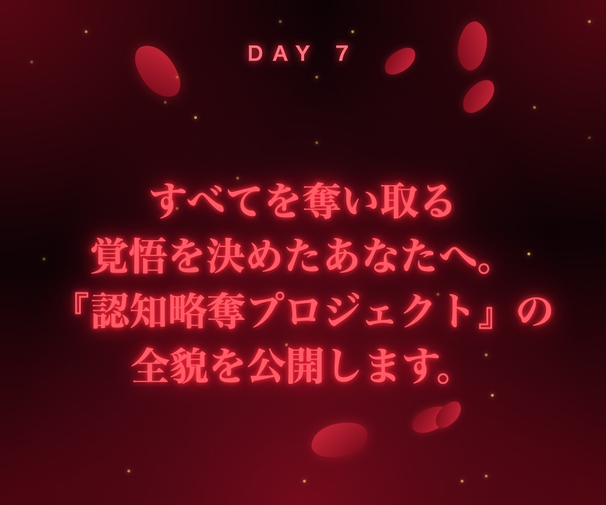

昨日はきつい話をしました。
ブロックしてください。
このページを閉じてください。
メンバーシップも退会してください。
あの言葉に嘘はありません。
本気で言いました。
昨日のワークに言葉を
寄せてくれた方も、
今はまだ考えている方も、
ここまで読んで
くれてありがとうございます。
それでも。
今このページを開いているあなたに
まず伝えます。
ありがとうございます。
僕はここに残ってくれたあなたから、
はっきりと熱意を感じ取りました。
昨日きついことを言ったのは、
あなたにこれから話すことを
本気で受け取り、
自分の人生を本気で
変えてほしかったからです。
では本題に入ります。
少しだけ想像してください。
まずは、3ヶ月後のあなたです。
朝目が覚める。
スマホを開く前に胸がざわつかない。
彼からの連絡を待つ時間が
なくなっている。
今日は会えるのかなと
一日中気にしなくていい。
彼のインスタも
奥さんのインスタも
もう開いていない。
SNSを開く理由がなくなった。
昼間のカフェで
彼と向かい合って座っている。
周りを気にしない。
隠れなくていい。
そして彼の口から出る言葉が、
会いたいでも好きだよでもなく、
これからの二人の未来や
家族の話に変わっている。
「次の休みどうする？」
「いつか二人の
子供の顔も見てみたいな」
「うちの親にも
一度会ってほしい」
「いつ一緒に暮らそうか」
そして、1年後のあなたです。
彼との間に
待望の新しい命が宿り、
あなたは堂々と
彼の隣を歩いています。
かつてあれほど怖かった
親戚の集まりでも、
もう誰にも気まずい思いはしません。
友達の結婚式で
ご祝儀袋を用意しても、
惨めな気持ちになることは
二度とありません。
「おめでとう」
「幸せそうだね」
と祝福されながら、
あなたは彼に守られ、
愛される一人の女性として、
穏やかで温かい毎日を
過ごしています。
さらに、5年後のあなたです。
休日の昼下がり、
あなたは大好きな彼と、
二人の間に生まれた
可愛い子供の手を繋いで、
近所のイオンで
仲良くショッピングをしています。
「パパ、これ見て！」
「ほら、走り回らないの」
と笑い合いながら、
フードコートでランチを食べたり、
家族みんなで
スーパーのカートを押して
夕飯の買い物をしたりする。
かつてあなたがSNSを見ては
胸を締め付けられていた
「あの幸せそうな家族の光景」の
真ん中に、
今度はあなた自身が
立っているのです。
これはあなたが
手に入れる未来です。
そしてこの未来は、
特別な人に
だけ用意されたものでは
ありません。
これから僕がご案内するのは、
既婚者の彼を略奪し、
未来を確定させるための
プログラムです。
名前は『認知略奪プロジェクト』。
これまで7日間お伝えしてきたことの
すべてがこのプロジェクトに
入っています。
でもこれまでの配信は、
あくまで入口に過ぎません。
世間の恋愛テクニックや
その場しのぎの気休めとは
ワケが違います。
僕の母が泥沼の修羅場をくぐり抜け、
既婚者の男から
家庭も未来もすべてを奪い取った
その生々しい実戦の全技術を、
そのままあなたに
再現可能なノウハウとして
インストールします。
ここであえて、
目を背けたくなるような現実を
お伝えします。
もしあなたがここで
正しい手順を踏まず、
中途半端なやり方のまま
時間を過ごし、
最終的に彼に都合よく
捨てられてしまったとしたら。
その代償は、
あなたの想像を
絶するものになります。
まだ修羅場を
経験していないあなたのために、
実際に何が起きるのかを
リアルにお伝えします。
まず、子供を一人成人するまで
育てるのに平均いくらかかるか、
ご存知でしょうか。
約2000万円です。
もし彼に認知してもらえず、
保身に走った彼に捨てられたら、
その2000万円という
途方もない養育費を、
あなたはたった一人で
背負わなければならなくなります。
さらに、それだけではありません。
ある日突然、
あなたの自宅のポストに
奥さんの代理人弁護士から
「内容証明郵便」が届きます。
そこには慰謝料300万円の請求と
書かれている。
パニックになって彼に連絡しても、
既婚彼は保身に走って
何もやってくれません。
それどころか、彼から
「俺は知らない」
「お前が勝手に産んだんだろ」
「俺の人生を
無茶苦茶にするんじゃねえ」
と暴言を吐かれ、
着信拒否をされて無視されるのです。
彼は奥さんと結託し、
今まであなたと過ごした時間や
愛の言葉など、
最初からなかったかのように
振る舞い、
安全な家庭へと逃げ帰っていきます。
残されたあなたは、
どうなるでしょうか。
彼に無視された以上、
その300万円の慰謝料は
あなた一人で
支払わなければなりません。
もし支払えずに無視し続けていれば、
裁判を起こされ、
ある日突然、
あなたの銀行口座が
強制的に差し押さえられます。
給料も差し押さえられ、
クレジットカードも
すべて使えなくなり、
社会的な信用を完全に失います。
実際に、そうやってすべてを失って
ボロボロになった人を、
僕はこれまで何人も見てきました。
そのうえ、彼との間にできた子供を
たった一人で育てなければならず、
終わりのない生活費が
重くのしかかります。
親戚や友人にも顔向けができず、
誰にも頼ることはできない。
養育費2000万円と
慰謝料300万円、
合わせて2300万円以上の
重荷を
一人で背負い、
精神的にも経済的にも
完全に孤立した地獄のなかに
放り出されるのです。
ですが、もしここで
正しく「認知」を勝ち取ることが
できたらどうなるでしょうか。
あなたが育てる子供の
養育費2000万円は、
あなた一人で背負うものではなく、
彼と二人で支え合い、
しっかりと受け取るものになります。
さらに、
慰謝料の300万円についても、
認知を勝ち取り
彼を完全にあなたの味方に
つけることができれば、
彼自身が負担してくれたり、
話し合いのなかで相殺されたりと、
あなたが一人で300万円を背負って
口座を差し押さえられるような
リスクそのものがなくなるのです。
つまり、認知を勝ち取るという
事実そのものに、
軽く300万円以上の金銭的価値、
養育費まで含めれば
2000万円以上の価値がある
ということです。
「あの時中途半端な
恋愛ごっこを続けていなければ」
「あの
時認知させて略奪する方法を
学んでいれば」
気づいた時には、
失った時間もお金も
二度と取り戻すことはできません。
この先失うはずだった
2300万円以上の損失を防ぎ、
彼と共に未来を築くための
自己投資として、
このプロジェクトに
どれほどの価値があるか、
賢明なあなたなら
もう痛いほど分かっているはずです。
【認知の方程式】
既婚男がすべてを捨てる瞬間 ＝
〇〇の開放感 ＋ 〇〇なプレ
ッシャー － 〇〇のブレーキ
【この章で手に入るもの】
✓ 認知略奪を完了させるまでの
具体的な期間の目安と、焦らず
結果を出すためのロードマップ
✓ 「私でも彼を奪えるの？」
という不安を消し去り、
明日からこの方程式に
乗るための初期マインドセット
【逆転の方程式】
追われる女 ＝ 〇〇の
完全放棄 ＋ 〇〇の徹底
【この章で手に入るもの】
✓ 今日から絶対にやめるべき
「重い言葉」と、彼が思わず
「分かった」と言ってしまう
「○○な言い換えフレーズ集」
✓ 彼からの「今から会える？」
に毎回即レスしていた悪癖を
断ち切り、主導権を完全に
握り返すチェックリスト
【防衛の方程式】
経済的束縛 ＝ 〇〇の確立
＋ 〇〇の負担による共犯関係
【この章で手に入るもの】
✓ もし明日彼が消えても人生が
路頭に迷わないための「最低限の
生活防衛チェックシート」
✓ 彼に生活費や○○を
自然に出させ、
「俺がお金を出したんだから手
放せない」と彼を沼らせる交渉術
✓ もしこのまま「認知できな
い」未来を迎えたとき、あなたに
降りかかる2300万円の損失と
恐るべき金銭的リスクの全貌
【メンタルの方程式】
無敵のメンタル ＝ 〇〇の
物理的遮断 ＋ 〇〇の設定
【この章で手に入るもの】
✓ 夜中に「何してるの？」と
長文を送りたくなった時に開く「
○○デトックスノートの書き方」
✓ 彼や奥さんのSNSを
どうしても見に行ってしまう悪癖
を完全に断つ「○○プログラム」
✓ このまま時間を無駄に
しないための、日付入りの
「〇〇カレンダー」の作り方
【すり替えの方程式】
罪悪感の反転 ＝ 〇〇の
罪悪感 ＜ 〇〇への気づき
【この章で手に入るもの】
✓ 彼が口にする「あの言葉」
の裏にある本音を丸裸に
するチェックシート
✓ 彼の中にある「ある心理」
を逆に利用し、「このままでは
認知略奪しないとまずい」
と彼に気づかせる会話の台本
✓ 世間の目を気にせず、
「私と生きることが彼の
正しい選択だ」と彼に
確信させるための○○テクニック
【攻略の方程式】
男の防衛崩壊 ＝ 〇〇の
徹底解剖 ＋ 〇〇の提供
【この章で手に入るもの】
✓ 既婚男性が心の奥底に
隠している「面倒くさい防衛心」
をスッと溶かす3段階ステップ
✓ 経営者・会社員・公務
員・士業、それぞれの職業に
応じた「絶対に失敗し
ない認知略奪の個別アプローチ」
【空間の方程式】
既成事実の構築 ＝ 〇〇の
放棄 ＋ 〇〇の強制
【この章で手に入るもの】
✓ 「別の女性との生活なんて
考えられない」と言っている彼
に、ある方法を使って生活のイメ
ージを自然に湧かせるテクニック
✓ ある特別な場所や環境を活用
して、「自然な同棲状態」をこっ
そりスタートさせる具体的な手順
✓ 彼が「自分の家よりも
圧倒的に居心地が良い。
ここが俺の居場所だ」
と錯覚してしまう○○の秘密
【防衛の方程式】
完全勝利 ＝ 〇〇の
心理誘導 ＋ 〇〇のルーティン
【この章で手に入るもの】
✓ スマホの通知、位置情報、
クレジットカードの履歴など、
絶対にボロを出さないための
徹底防衛リスト
✓ 怪しまれずに連絡を
取り合い、密会するための
「二人の隠しルール」の作り方
✓ 万が一、奥さんに勘づかれた
り疑われた時に、一発でシラを切
り通すための初期対応マニュアル
【会話の方程式】
自発的決断 ＝ 〇〇の
禁止 ＋ 〇〇の連打
【この章で手に入るもの】
✓ 重たい女だと思われずに、
彼のLINEを開くたびに
あなたを愛おしくさせる「○○
メッセージ集（実例100選）」
✓ 「離婚は無理」
「子供がいるから」と釘を
刺された瞬間に、彼のその言葉を
優しく封じ込める神フレーズ
✓ 彼に「俺は本当はどうした
いんだっけ？」と自問自答させ、
自分から「離婚して一緒になろう
」と言い出させる○○テクニック
【レスキューの方程式】
修羅場の逆転 ＝ 〇〇の
完全封印 ＋ 〇〇による一撃
【この章で手に入るもの】
✓ 既読がつかない、
返信が途絶えた時に彼の
追撃本能に火をつける一通
✓ 他の女性の影や旅行の気配を
感じた時、罪悪感をエネルギーに
変えて自分に引き戻す方法
✓ 彼から「別れよう」と言われ
た時、形勢を180度ひっくり返
すための「最後の一通」の送り方
【法務の方程式】
法的着地 ＝ 〇〇の
排除 ＋ 〇〇による合意
【この章で手に入るもの】
✓ 市役所への届け出から裁判所
の手続きまで、「子供を認知して
もらう」ための具体的なステップ
✓ 認知をすると戸籍や奥さん、
子供への影響はどうなるの
か？男が一番恐れる「バレる
恐怖」をクリアする交渉のコツ
✓ 養育費の取り決めや、
彼からしっかりお金を引き出す
ための具体的な話し合いの進め方
【最終方程式】
出産後逆転 ＝ 〇〇の
阻止 ＋ 〇〇の形成
【この章で手に入るもの】
✓ 計画通りにいかず、
すでに子供が生まれて
いる状態からでも、彼の責任感を
呼び覚まして認知させる手順
✓ 「子供のためにどうするの
か」を彼に突きつけ、
逃げ場をなくして認知届に
ハンコを押させる実戦マニュアル
Q．これって有料なんですか？
当たり前です。
お互いのためにも、
冷やかしや生半可な気持ちの方は
最初から排除したいです。
自分の人生を変えるための
自己投資すらケチってしまう女性は、
一生既婚彼の都合のいい女性で
終わるだけです。
Q．お金がないです。でもこのプロジェクトに参加したいです。どうすればいいですか？
頭を冷やしてください。
既婚彼の子供の成長を理由に
あと10年待ってとズルズル時間を
搾り取られる気ですか？
このプロジェクトは、
その果てしない10年の時間を
ショートカットするための
自己投資になります。
これからの人生を60年と考えたら、
安すぎます。
万が一もたもたして
奥さんや会社にバレて
数百万円の慰謝料を
請求されるリスクに
比べたら、
ここで確実に
既婚彼を奪い取る方が
100倍賢くてお得だと
思います。
その上で、しかし、
いつも見てくれて、
ここまで見て本気なフォロワーさんが
生活が止まって、
もう食うものも
食えなくなってしまうのは、
僕としてはとても
心苦しいと思いました。
なので今回は特別に、
分割払いもできるように設定し、
無理のない形で
スタートできるようにしました。
なので、お金がないとか
お金がかかるからできないは
理由にならないです。
Q．年齢が気になります。もう子供を産める年齢じゃなくなりそうです。
確かにリスクもあります。
だから、自分が無理をして
年をとった後でも
子供を産むということを
しなくてもいいと思います。
ただ、僕の母は40歳で
妹を産んでいるので、
本気で子供が欲しいという人は
諦めなくてもよいのでは
ないかと思います。
Q．認知させるタイミングはいつが一番ベストですか？すでに妊娠している場合はもう遅いでしょうか？
決して遅くありません。
もちろん、一番のベストは
妊娠する前の段階から
認知プログラムを実践し、
あらかじめ彼の脳内に
「あなたとの子供」と
「責任を取る覚悟」を
刷り込んでおくことです。
しかし、認知というものは
子供が生まれた後や、
少し大きくなってからでも
十分に可能なものです。
すでに妊娠している方や
出産を控えている方でも、
そこから男の保身を崩して
認知・未来を確定させる手順は
確立されていますので、
どうか希望を捨てないでください。
Q．もし子供ができたとき、彼に「おろしてほしい」と言われたらどうすればいいですか？
既婚男性は最初、
恐怖と保身から
必ずそのように言います。
その瞬間に
泣きついたり感情的に
責めたりすると、
彼は完全に逃げます。
プロジェクト内では、
彼が保身を捨てて
「この子とあなたを守るしかない」と
腹を括るための
具体的な切り返しと外堀の埋め方を
すべて網羅しています。
Q．彼にすでに奥さんとの間に子供がいます。それでも認知や離婚は可能でしょうか？
可能です。
実際、奥さんとの間に
子供がいる状態から
離婚・認知を勝ち取ったケースは
いくつもあります。
彼にとって
「今の家庭の子供」と
「あなたとの未来」の
優先順位を完全に逆転させるための
心理誘導の手順を
そのまま実行してください。
Q．参加したいですが、いくらですか？
価格については、
明日の夜21時の募集開始と
同時に公開します。
ただ、ここまで読んで
いただいたあなたなら、
先ほどお伝えした
「将来失うかもしれない
2300万円以上の損失
（養育費・慰謝料・弁護士費用）」
と、
このプログラムを手に入れて
未来を確定させる価値を
天秤にかけたとき、
どちらが圧倒的に
安い自己投資であるかは
すでにお分かりのはずです。
冷やかしではなく
本気で自分の人生を
取り戻したい方だけ、
明日の21時をお待ちください。
お待たせいたしました。
『認知略奪プロジェクト』の
募集は、いよいよ明日
12月5日（土）の夜21時より
スタートします。
さらに今回のプロジェクトでは、
一人ひとりに確実な結果を
出していただくため、
【先着5名様限定】で
締め切らせていただきます。
定員に達し次第、
いかなる理由があっても
今回の募集は完全に
終了となりますので、
後から追加の募集を
行う予定はありません。
詳細や参加のための専用リンクは、
明日の案内でお伝えします。
これまで「でも」「だって」と
言い訳を続け、
周りの目に怯え、
都合の良い愛人として
扱われてきた自分とは、
明日で完全に決別してください。
明日からのあなたは、
ただ愛されるのを待つだけの
存在ではありません。
男の心理を裏から支配し、
家庭の壁をぶち壊し、
愛も遺伝子も未来もすべて
力ずくで奪い取る
「すべてを手にする側の女性」
として
生まれ変わるのです。
迷っている暇はありません。
明日の21時、
このチャンスを絶対に
掴み取ってください。
覚悟を決めたあなたと、
プログラムの向こう側で
お会いできるのを
楽しみにしています。
7日間を読んだ今の
あなたの気持ちを、
聞かせてください。
迷っているなら、
そのまま答えて大丈夫です。
書いてくれた言葉には、
僕が目を通します。
明日の予告
明日21時、募集の詳細と
申込みページを公開します。
今日書いた「叶えたい未来」を、
明日の案内を
読む前にもう一度見返してください。
この先の時間をどう使うか。
明日は、自分で選ぶ日です。
ケイ